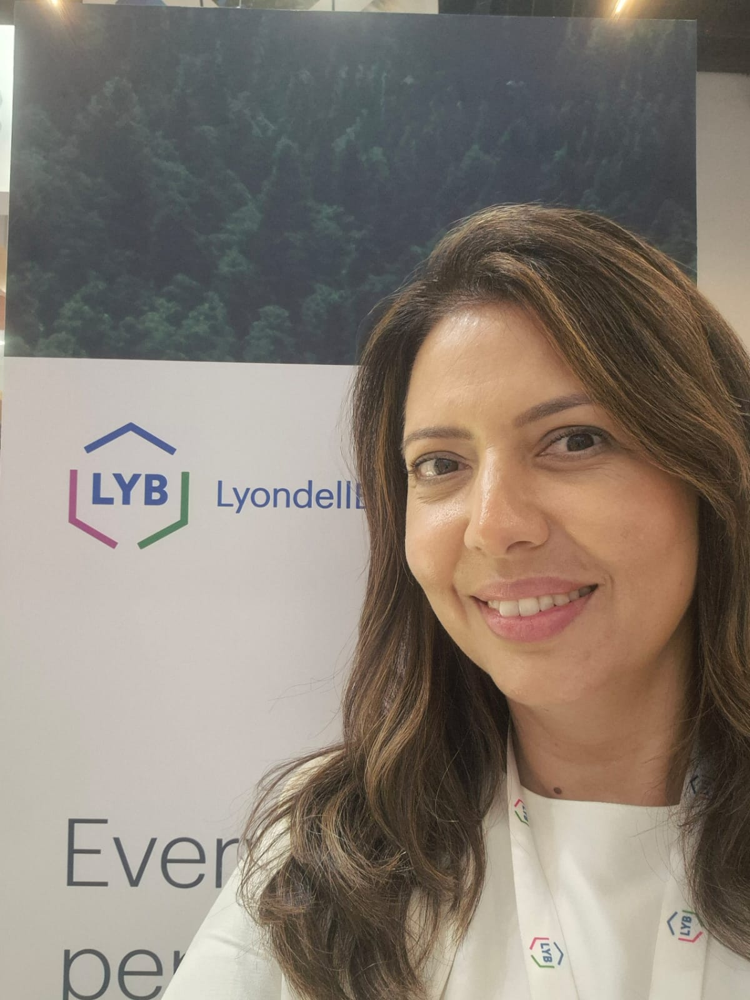
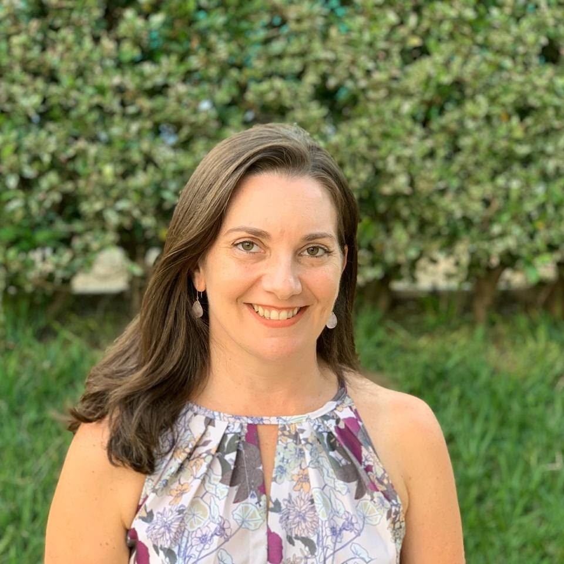
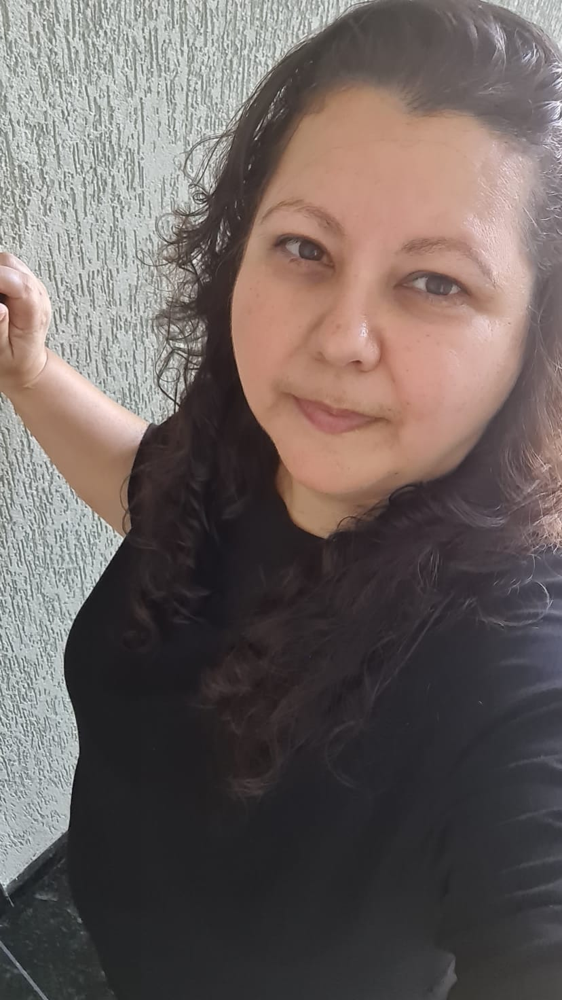

"O estudo e a dedicação são fundamentais para construirmos uma trajetória profissional sólida."
Clique para ler a entrevista completa
Iniciei no mercado de trabalho aos 18 anos numa empresa de telemarketing. Após concluir a faculdade, foquei na área comercial e hoje sou gerente de contas numa empresa petroquímica, onde estou há 13 anos. O que mais me motiva na área de vendas de matérias-primas é a dinâmica diária de aprender sobre novos produtos e negociar com indústrias.
Conquistar minha posição de liderança em um segmento altamente competitivo foi um divisor de águas na minha carreira. Minha inspiração profissional vem de colegas de trabalho que começaram comigo e hoje ocupam cargos de diretoria.
Acredito profundamente no ensino técnico e na educação como alicerces de vida. Meu conselho aos estudantes é que identifiquem suas habilidades, apliquem seus conhecimentos em profissões com as quais se identifiquem e trabalhem sempre com carinho, respeito e dedicação.

"Cuidar da saúde do corpo, mente e espírito é indispensável para vivermos bem."
Clique para ler a entrevista completa
Sou graduada em Enfermagem há 25 anos e atuo no Ambulatório de Oncologia. Minha rotina envolve o cuidado direto a pacientes fragilizados pelo tratamento contra o câncer, o que exige muita empatia e controle emocional. Também me especializei em acupuntura, o que me trouxe uma visão integrativa da medicina preventiva.
Acompanhar a recuperação dos pacientes e vê-los gratos pelo atendimento é a maior recompensa da minha profissão. Um dos meus maiores desafios é atuar na oncologia pediátrica, ajudando crianças a enfrentarem o tratamento.
Minha primeira professora de estágio é minha grande inspiração na enfermagem. Deixo como mensagem a importância de praticar atividades físicas, cuidar do bem-estar emocional, ser grato e manter a fé e a espiritualidade em dia!

"Acredito que as crianças são como uma página em branco que vai se aprimorando com o tempo."
Clique para ler a entrevista completa
Sou monitora de ensino básico na área da educação e trabalho na instituição há 15 anos. Minha trajetória até chegar aqui foi marcada por muito esforço e dedicação aos estudos: estudei bastante, passei na faculdade e hoje estou realizando esse trabalho. O que eu mais gosto na minha rotina é a convivência diária com as crianças. Acredito que a importância do nosso setor está em oferecer educação, disciplina e carinho.
Um dos desafios mais marcantes da minha trajetória foi passar pelo período da faculdade enquanto estava grávida, um momento de muita superação. Por isso, a conquista profissional que mais me marcou foi me formar em Pedagogia. Para mim, trabalhar com educação significa entender que as crianças são como uma página em branco, que chegam com o seu contexto familiar e vão se desenvolvendo e aprimorando ao longo do tempo.
Minha maior inspiração de vida sempre foi a minha mãe. Sinto que o meu trabalho representa algo muito positivo para os alunos, pois eles me recebem sempre com muito carinho. O conselho que deixo para os estudantes é: se você tem um sonho, por menor que seja, lute, estude e corra atrás sempre, pois no futuro você verá o quanto valeu a pena. Para a comunidade escolar, lembro que as crianças e os adultos têm suas dificuldades, por isso é preciso ter equilíbrio — não ser rigorosa demais, mas saber ouvir e ajudar no que for preciso.